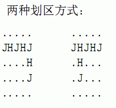

* Lines 1..5: Each of the five lines contains five characters per line, each 'H' or 'J'. No spaces are present.
5行，输入农场的情况．
It's election time. The farm is partitioned into a 5x5 grid of cow locations, each of which holds either a Holstein ('H') or Jersey ('J') cow. The Jerseys want to create a voting district of 7 contiguous (vertically or horizontally) cow locations such that the Jerseys outnumber the Holsteins. How many ways can this be done for the supplied grid?
农场被划分为5x5的格子，每个格子中都有一头奶牛，并且只有荷斯坦(标记为H)和杰尔西（标记为J）两个品种．如果一头奶牛在另一头上下左右四个格子中的任一格里，我们说它们相连． 奶牛要大选了．现在有一只杰尔西奶牛们想选择7头相连的奶牛，划成一个竞选区，使得其中它们品种的奶牛比荷斯坦的多． 要求你编写一个程序求出方案总数．
* Lines 1..5: Each of the five lines contains five characters per line, each 'H' or 'J'. No spaces are present.
* Line 1: The number of distinct districts of 7 connected cows such that the Jerseys outnumber the Holsteins in the district.
HHHHH
JHJHJ
HHHHH
HJHHJ
HHHHH
2
